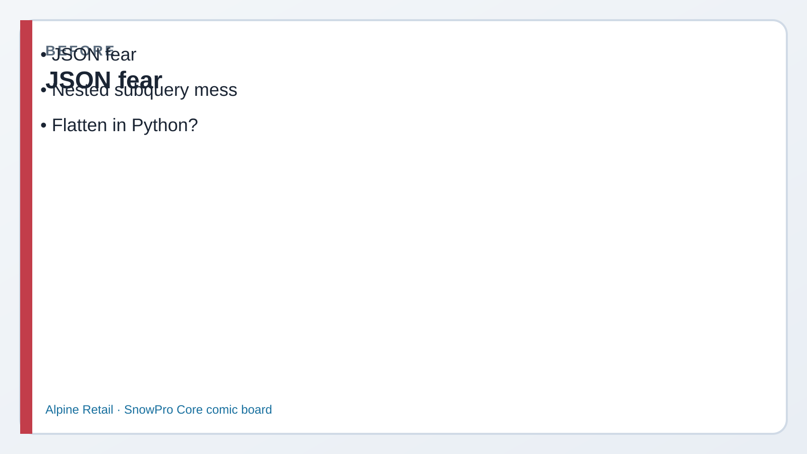
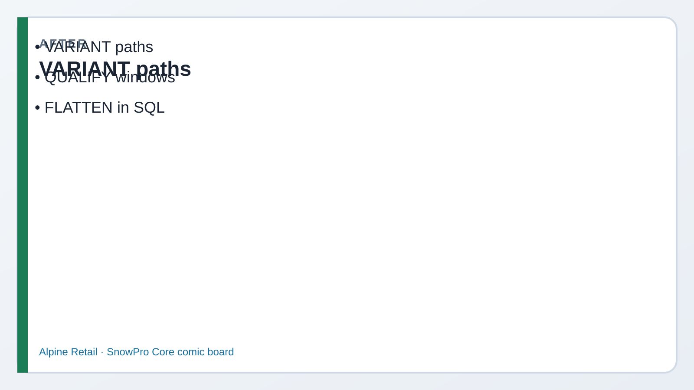

Lab 15 · Latest bill, and the JSON receipt · You are Priya
SQL power tools + JSON (VARIANT)
Read every Teach first section before you copy SQL.
Core loves practical SQL: QUALIFY, MERGE, a taste of PIVOT, tiny UDFs/procs,
and pulling fields out of VARIANT with path syntax + FLATTEN on LAB.EVENTS_RAW.
1
Picture first. Look at BEFORE/AFTER → read the comic → then run tiny SQL.
If a paragraph feels heavy, skip to the next comic strip — Dev explains it out loud for you.
Business problem
Kai writes nested subqueries for “latest bill per loyalty member.” Store-app events arrive as JSON.
Morgan wants that work done in Snowflake — not five half-finished scripts.
Solution you will practiceQUALIFY with ROW_NUMBER, a small PIVOT, MERGE INTO, a SQL UDF, a Snowflake Scripting procedure,
and FLATTEN on event payloads.

Before JSON fear / nested mess.

After VARIANT · QUALIFY · FLATTEN.
Episode 15 · Start here
Kai’s subquery onion vs QUALIFY
KaiAnalyst
I wrap ROW_NUMBER in a subquery every time. Is there a less ugly way?
DevCoach — explains why
QUALIFY filters window-function results the way HAVING filters aggregates. Same power, less nesting.
Remember: WHERE → HAVING → QUALIFY (different stages of the query).
See it — today’s toolkit
Windows
QUALIFY
Keep rows where the window expression is true — no outer SELECT required.
QUALIFY ROW_NUMBER() … = 1
Upsert
MERGE INTO
Match keys → update; no match → insert (or delete on match).
Staging rows → curated table
Shape
PIVOT awareness
Turn status values into columns. Know it exists; syntax is fiddly — recognize the pattern.
SHIPPED / PENDING as columns
JSON
VARIANT + FLATTEN
Store semi-structured as VARIANT; path with :; explode with lateral FLATTEN.
payload:user.id
Function
UDF
Returns a value (scalar) or table (UDTF). Called from SQL like a function.
FN_INR_TO_PAISE(amount)
Procedure
Stored proc
Runs procedural logic (Scripting/JS/…). Invoked with CALL — not a drop-in SELECT expression.
CALL LAB.SP_COUNT_ORDERS()
Before Step 1
Latest order per customer — one pass
RileyEngineer
Partition by customer, order by time descending, keep rn = 1. That’s the pattern.
PriyaYou
And QUALIFY lets me filter on rn without wrapping the whole thing in another SELECT.
1 QUALIFY with ROW_NUMBER
What this does: Latest order per customer in one readable statement.
SQL · QUALIFY
USE ROLE ROLE_CORE_LAB_ADMIN;
USE WAREHOUSE WH_CORE_XS;
USE DATABASE DMART;
USE SCHEMA LAB;
SELECT ORDER_ID, CUSTOMER_ID, ORDER_TS, AMOUNT_INR,
ROW_NUMBER() OVER (
PARTITION BY CUSTOMER_ID ORDER BY ORDER_TS DESC
) AS RN
FROM LAB.ORDERS
QUALIFY RN = 1;
✓ One row per customer — the newest order
2 PIVOT awareness + MERGE
What this does: PIVOT reshapes statuses into columns. MERGE upserts into a demo table.
SQL · PIVOT
SELECT *
FROM (
SELECT CUSTOMER_ID, STATUS, AMOUNT_INR FROM LAB.ORDERS
)
PIVOT (
SUM(AMOUNT_INR) FOR STATUS IN ('SHIPPED', 'PENDING', 'RETURNED')
) AS P
ORDER BY CUSTOMER_ID;
SQL · MERGE
CREATE OR REPLACE TABLE LAB.ORDERS_UPSERT_DEMO (
ORDER_ID NUMBER, CUSTOMER_ID NUMBER,
STATUS STRING, AMOUNT_INR NUMBER(10,2)
);
MERGE INTO LAB.ORDERS_UPSERT_DEMO t
USING LAB.ORDERS s ON t.ORDER_ID = s.ORDER_ID
WHEN MATCHED THEN UPDATE SET
t.STATUS = s.STATUS, t.AMOUNT_INR = s.AMOUNT_INR
WHEN NOT MATCHED THEN INSERT
(ORDER_ID, CUSTOMER_ID, STATUS, AMOUNT_INR)
VALUES (s.ORDER_ID, s.CUSTOMER_ID, s.STATUS, s.AMOUNT_INR);
✓ PIVOT returns columns per status; MERGE fills upsert demo
Before Step 3
UDF vs procedure — don’t swap them
KaiAnalyst
Can I put a stored procedure in the SELECT list like a function?
DevCoach
No. A function belongs in a SELECT or FROM. A procedure is something you CALL. A table function returns rows. Don’t mix them.
3 Tiny UDF + stored procedure
What this does: SQL UDF converts dollars to cents. Scripting proc returns a count string via CALL.
SQL · UDF
CREATE OR REPLACE FUNCTION LAB.FN_INR_TO_PAISE(AMOUNT NUMBER)
RETURNS NUMBER LANGUAGE SQL
AS $$ SELECT (AMOUNT * 100)::NUMBER $$;
SELECT ORDER_ID, AMOUNT_INR,
LAB.FN_INR_TO_PAISE(AMOUNT_INR) AS PAISE
FROM LAB.ORDERS LIMIT 5;
SQL · procedure
CREATE OR REPLACE PROCEDURE LAB.SP_COUNT_ORDERS()
RETURNS STRING LANGUAGE SQL
AS $$
DECLARE n NUMBER;
BEGIN
SELECT COUNT(*) INTO n FROM LAB.ORDERS;
RETURN 'ORDERS row count = ' || n;
END;
$$;
CALL LAB.SP_COUNT_ORDERS();
✓ Function works in SELECT; proc responds to CALL
Before Step 4
Riley opens the JSON events
RileyEngineer
LAB.EVENTS_RAW already has VARIANT payloads from Lab 00. Path with colon, cast to STRING/NUMBER.
SamCompliance
FLATTEN turns nested keys into rows — great for exploration. Don’t forget casts so types stay honest in marts.
4 VARIANT paths + FLATTEN
What this does: Pull nested fields, then laterally flatten top-level keys for a row-per-key view.
SQL · paths
SELECT EVENT_ID,
PAYLOAD:event::STRING AS EVENT_TYPE,
PAYLOAD:user.id::NUMBER AS USER_ID,
PAYLOAD:user.plan::STRING AS PLAN
FROM LAB.EVENTS_RAW;
SQL · FLATTEN
SELECT e.EVENT_ID, f.KEY, f.VALUE
FROM LAB.EVENTS_RAW e,
LATERAL FLATTEN(INPUT => e.PAYLOAD) f;
If EVENTS_RAW is empty, re-run the insert section of sql/00_sample_data.sql.
Say: Same idea — keep rows after window functions compute — but QUALIFY is clearer and avoids an extra SELECT wrapper. WHERE can’t see window results; QUALIFY can.
Q2. What does LATERAL FLATTEN do?
Say: Expands a VARIANT/ARRAY/OBJECT into a set of rows (keys/elements) correlated to the parent row — classic semi-structured explosion pattern.
Q3. VARIANT path syntax — give an example.
Say:payload:user.id::NUMBER or bracket form payload['user']['id']. Cast explicitly when you need typed columns.
Q4. UDF vs UDTF vs stored procedure?
Say: UDF returns a scalar in SQL expressions. UDTF returns a table (use in FROM). Stored procedure runs procedural logic via CALL — not a SELECT-list function.
Q5. When is MERGE the right tool?
Say: Upserts and CDC-style apply: match on keys, update changed rows, insert new ones, optionally delete. Prefer over delete-all + insert when you need precise row sync.
Priya’s wrap-up (say this out loud)
“I used QUALIFY for latest-order-per-customer, practiced PIVOT and MERGE, shipped a tiny UDF and a CALL-able procedure,
and read LAB.EVENTS_RAW with VARIANT paths plus FLATTEN.
Outcome: latest bill per member, and store-app JSON, are queries I can say out loud.”
Next
Lab 16 — Time Travel & Fail-safe (Domain 5). Skim EXAM_TIPS_DOMAIN4.md while it’s fresh.